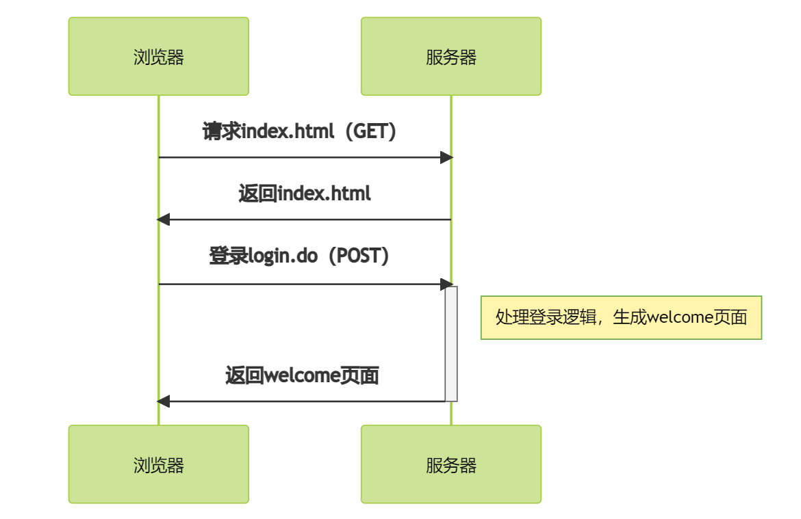
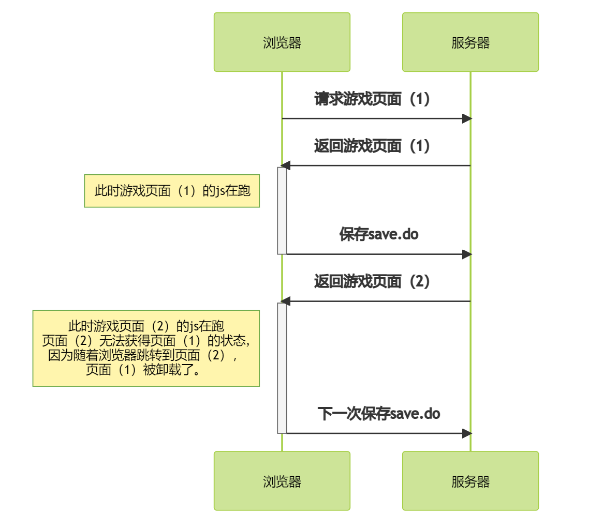

Ajax技术的历史
问题的提出
页面（运行于本地浏览器）和远端服务器之间的通讯基本是一锤子买卖，两者的交互一般遵循一问一答的形式。浏览器请求某个url，服务器就返回相关的资源，这些资源可以是页面，也可以是图像等静态资源。如下图所示：
这一过程中，浏览器的每一个请求，服务器都会返回一张新的页面，浏览器会切换到这张新页面，传统的B/S交互模式通过这种方式来进行。
分析一下这个流程，有这么几个问题：
- 页面由服务器生成，如果是静态页面还好，假如页面是动态生成的，压力都在服务端。
- js的行为属于本地的自娱自乐，并不会真正影响服务器的状态。
- 只能通过表单影响服务器的状态，而表单提交意味着页面刷新，js的生命周期结束。
- 页面刷新处于同步状态，如果网络出现问题，你只能等。
如果说1，4还属于可以接受的范围，2、3则是目前前端全面转向Ajax技术的最根本性原因。简单的说，如果你想向服务器传递消息，你就只能放弃你当前的所有js状态，这给前端开发带来了巨大的麻烦。
我们设想一个环境，你打开一个网页游戏，前端的js记录下了你游玩的所有状态。此时你希望保存数据，你只能通过表单发起一次请求，服务器随即返回一个页面，浏览器跳转到新页面上。此时旧页面销毁，开始跑新页面，旧页面js的数据是无法传递到新页面的。因为js本质上是页面上的脚本，他的生命周期跟随页面的结束而结束。
问题的解决
面对这个问题，我们有两种解决思路：
- 把页面（1）的所有状态都上传服务器，并在生成页面的时候发下来，由页面（2）的js解析继承。
- 让js拥有可以直接向服务器发送请求、接收数据而不刷新页面的能力。
显然正常人都会选2，因此2005年，一篇文章横空出世，带来的Ajax：
Ajax: A New Approach to Web ApplicationsAjax是Asynchronouse JavaScript + XML的缩写，这里要关注的是以下几点：
- 过程是异步的（也就是首字母大写A的意义）。
- 数据请求通过XMLHttpRequest对象来实现。
- JavaScript在这个过程中处于核心地位，由他来获取数据，并动态改变页面的内容（DOM）。
- 虽然设想之初，数据载荷是XML和CSS，但Ajax后来的实现并不依赖于这两者，而是更多依赖于json。
XMLHttpRequest对象
理论已经就位，现在就看谁先搞出来这个XMLHttpRequest对象了。啪的一下，很快啊，MS就在IE5中引实现了这个功能，引入了XHR对象。是的你没看错，是IE第一个实现的Ajax，通过引入一个新的ActiveX对象来实现。但这个过程很繁琐，而且不同版本的IE还有不同的XHR版本。
从IE7开始，IE正式支持原生的XHR对象，不再依赖于ActiveX（也就不依赖于Windows），之后的主流浏览器都开始支持原生XHR，并最终被W3C标准化，成为JavaScript的标准能力。
Ajax请求库axios
原生的XHR使用起来很麻烦，此外网络的远程交互属性需要更为复杂精细的错误和异常处理能力，因此多数情况下我们会使用封装好的库来进行Ajax请求。axios就是这样一个轻量级的请求库。
引入axios库
axios可以通过npm/yarn等nodejs包管理工具来安装，这种用法一般是针对webpack项目的，但对于我们初学者来说，可以先尝试直接引入，直接使用。
我们可以通过CDN在线引入：
<script src="https://cdn.jsdelivr.net/npm/axios/dist/axios.min.js"></script>
axios调用
现在我们来试着发送一段请求，首先我们在根目录下放入0.json、1.json...5.json，这6个文件，作为请求的对象，里面的数据类似于：
[{
"id": 1,
"name": "东野圭吾：白夜行（2017版）",
"author": "[日]东野圭吾",
"price": 59.6,
"img": "image/1.jpg",
"category": "侦探/悬疑/推理"
},
...
]
json数据就是js里的数据类型，一般组织成数组或者对象的形式。0.json里有5个对象数据，1.json~5.json里各有一个对象。
我们先请求0.json看一下：
window.onload = function(){
axios.get("0.json")
.then(function(resp){
console.log(resp);
})
.catch(function(err){
console.log(err)
})
}
axios.get表示发送GET请求，参数0.json为请求的url地址。then用来告诉axios请求成功后，应该如何做，此时要传入一个回调函数，带一个参数。axios.get(..).then(..)这种调用方式在javascript里很普遍，称为级联函数，想想为什么可以这样做？catch告诉axios请求失败后应该如何处理，也要传入一个回调函数，你可以给一个错误的url试试结果。
请求数据的获取
请求结果会放在回调函数的resp参数里，我们在终端里能看到它是什么：
其中我们比较关心的是以下几个字段：
| 字段 | 意义 |
|---|---|
| data | 具体返回的数据载荷 |
| headers | http请求的返回头 |
| status | 请求的返回代码，200是请求成功 |
| statusText | 请求的返回信息 |
如果请求成功，可以通过resp.data读出返回的数据，我们直接打印一下：
window.onload = function(){
axios.get("0.json")
.then(function(resp){
for( let i=0; i<resp.data.length; ++i){
console.log(resp.data[i]);
}
})
}
可以看到输出了全部五条记录。